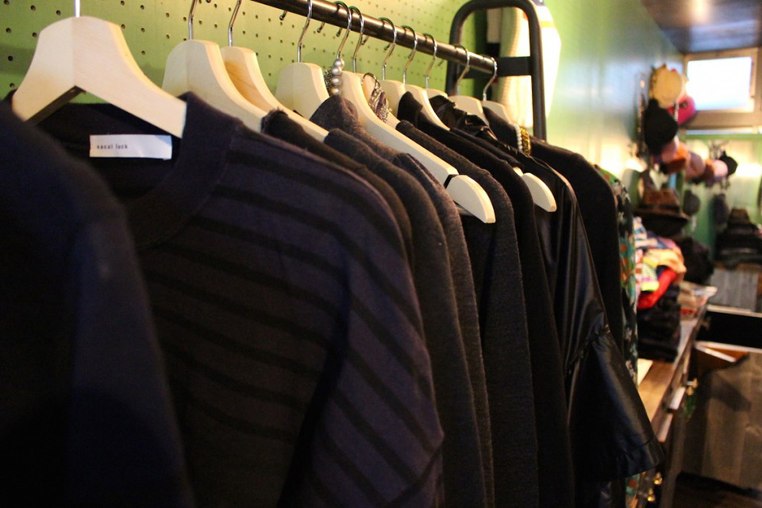

kagamirockについて
お店の名前はkagamirock(カガミロック)と申します。鏡のない時代ツルツルピカピカな姿が映る岩があったそうです。わざわざおしゃれを楽しむためにその岩を目指して人々は出かけたと言われています。「幻の岩、鏡岩」わざわざオシャレを楽しむために足を運んでいただきたい！そんな願いを込めてみました。
お店の名前はkagamirock(カガミロック)と申します。鏡のない時代ツルツルピカピカな姿が映る岩があったそうです。わざわざおしゃれを楽しむためにその岩を目指して人々は出かけたと言われています。「幻の岩、鏡岩」わざわざオシャレを楽しむために足を運んでいただきたい！そんな願いを込めてみました。
こちらは2015年SSのサンローラン。顧客様でほぼ完売の大変人気のあったエナメルストラップシューズ。エディが退任してしまったのでエディデザインのサンローランはこれから貴重ですね。
フランスから着物リメイクのブランドwamonoの小物達が到着致しました。私達がフランスのモノってなんでもすてき！！と思うように、フランスの方達も日本の着物生地をとても気に入ってくれます。そしてフランス人が着物をリメイクするとこんな素敵なバックに大変身しちゃいます。なんてセンスがいいんでしょう。このバックほしい・・・でもすべて一点モノなのです。がまんがまん。ちなみにwamonoは日本ではうちでしか取り扱ってませんよ〜急いで！！